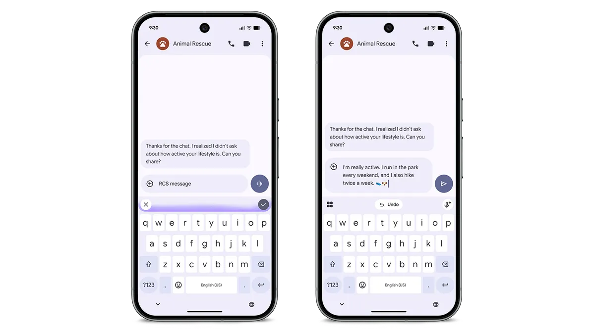
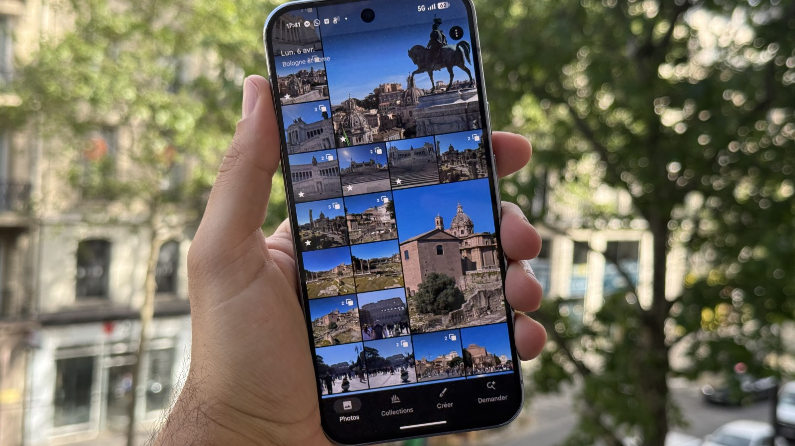

Morning routine Tech — Le brief du mercredi 11 novembre 2026
by Trinity
2 actualités · 1 min de lecture
Échantillon pilote privé non exhaustif : deux sujets retenus ; coupure de collecte le 11 novembre 2026 à 18:50 (Europe/Paris).
Apple & Google
1/2 — Pixel Drop : Gemini Intelligence arrive sur les Pixel 10, sans tout débloquer en France

Illustration de la composition de messages dans la présentation du Pixel Drop.
Dans un billet publié le 10 novembre 2026, Google annonce l’arrivée de Gemini Intelligence sur les Pixel 10 à l’occasion du Pixel Drop de novembre. 1 Le déploiement s’étale sur plusieurs semaines : toutes les nouveautés ne sont donc pas nécessairement disponibles immédiatement sur chaque appareil. 1 Rambler peut notamment retirer les hésitations de la dictée et structurer les propos en un texte plus clair. 1
Frandroid cite le Pixel 10 Pro Fold parmi les modèles concernés, mais précise que certaines fonctions restent soumises à des restrictions de pays, de langue ou d’âge. 2 L’automatisation des tâches dans Gemini n’est notamment pas annoncée disponible en France dans cette couverture. 2 Le point à vérifier est donc la disponibilité de chaque fonction, et pas seulement l’éligibilité générale du téléphone au Pixel Drop. 2
Source : Google
Photographie & vidéo
2/2 — Google Photos : moins de copies imposées après certaines retouches IA

L’application Google Photos affichée sur un smartphone. — Frandroid
Dans son article daté du 11 novembre 2026, Frandroid rapporte que Google Photos n’impose plus d’enregistrer une copie après une retouche à la Gomme magique ou avec l’outil Unblur. 3 L’annonce concerne les appareils équipés d’Android 11 ou d’une version ultérieure. 3 Les retouches restent modifiables après l’enregistrement. 3 L’intérêt pratique annoncé est de simplifier ces retouches en évitant les copies qu’elles imposaient, sans présenter cela comme une suppression générale de tous les doublons de la photothèque. 3
Source : Frandroid
ceci a été le brief de mercredi